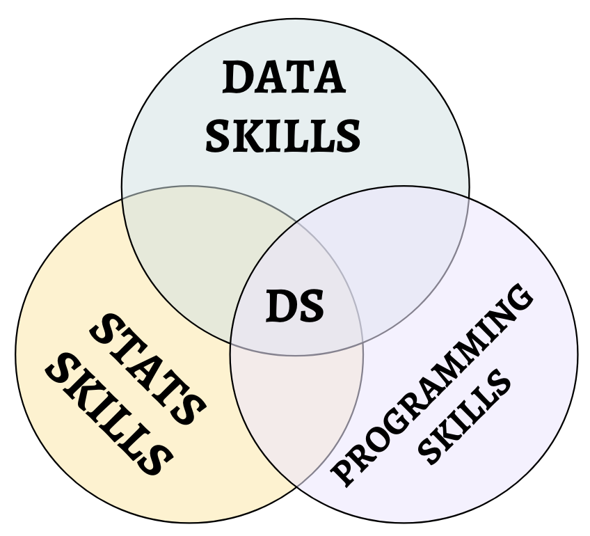
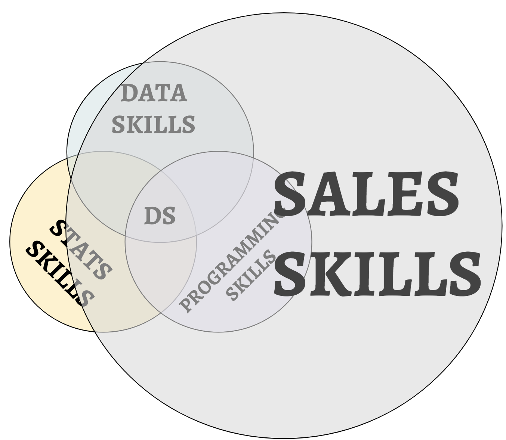

The Fallacy of the Data Scientist's Venn Diagram
Practical walkthroughs on machine learning, data exploration and finding insight.
Originally published on Linkedin
Well, fallacy may be a strong word, how about incomplete? I’m talking about the Venn diagram that depicts the skills needed to be a data scientist. I think Drew Conway was the first to draw this and, since, hundreds of variations have followed. The one here is pretty close to the first one I saw.


Not as symmetrical as the original and a big shift in responsibilities!
Data Scientists Are Always Selling
Data scientists are always selling and I have been selling since day one. This isn’t by choice or as a natural progression up the career ladder, but because its a brand new field that is continuously reinventing itself.
I’ve been a data science team founder, consultant, trainer, mentor, etc, all the while producing work described in the three original circles. If you’ve been at it for a few years, you’re top leadership, willingly or unwillingly. I’ve worked in environments where my customer sat 3 cubicles down all the way to those across the country spending 100k to kick-start their own data science team. The selling never abates.
We’ll start with the obvious - selling to the customer is a big one! You have to convince them to hire your services, this means explaining what data science can do for their needs and sometimes what data science is. External or internal customers, same deal. They know about their problems, but don’t always know what a machine learning or AI solution would look like. Once you have done your due diligence, built a model, you have to convince them to actually use what they paid for (yes, this does happen).
Then you have to explain it all over again with actual field users - they’re rarely involved in the development phase. You need to work with them using a different language. They’re the ones that will say ‘there goes my job’ in a joking but nervous tone. Besides explaining how it works, you need to reassure them it won’t take their job away but instead make them much, much better at it. All that is selling…
But it doesn’t end there, far from it. Internally, the job requires many tools. They change all the time - few know how to use them, fewer know how to interpret them, and even less know how to ply them into practical working pipelines. For that reason, we’re always called to explain, justify, breakdown the choices made in order to convince co-workers, managers, the C-suite, etc. about what the heck is going on here. This is actually a serious responsibility. What tools and techniques you advocate will invariably affect a department’s or company’s business analytics, warehousing practices, web-serving platforms and even who will be hired/laid off next. More selling…
And finally, we are continuously selling to ourselves - from the right to be called a Data Scientist, the need to defend the title, convincing oneself that we can keep up with the Cambrian explosion of tools and techniques (think feature engineering in the age of deep neural networks, or relational databases in the age of distributed computing, and all things open source). Harder to sell, but I do it all the time, is telling myself that I am clever enough to stay a step ahead of AI and its potentially nefarious effect on my profession, the people I work for, and the world. Selling, selling, selling.
{% include follow-me.html %}We’re All New At This
If you are a data scientist, then your team is most likely new or recent. You’re either a junior data scientist or a senior data scientist and if you are the latter, you most likely hired, trained and mentored the former. And in turn, like say less than a year, that person will probably be training the next hire. So if you just got hired, you too will be selling soon…
But I Am Loving It
If somebody were to offer me a new type of data science job, free from any selling, I would turn it down. This is one of the few professions that, no matter whether dressed around large or conservative organizational trappings, will always feel like a 2-person startup. And as Max Tegmark in ‘Life 3.0: Being Human in the Age of Artificial Intelligence’ states, its the jobs that require creativity and human interaction that will be the last to be automated.
But let’s just be honest about that job description…
Thanks for reading!
Manuel Amunategui - on Twitter: @amunategui
VP, Data Science @ http://www.springml.com/
Educator @ amunategui.github.io